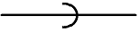
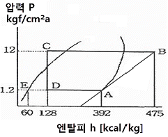

공조냉동기계기능사 (2014-01-26 기출문제)
1과목: 공조냉동안전관리
1. 보일러 점화 직전 운전원이 반드시 제일 먼저 점검해야 할 사항은?
- 공기온도 측정
- 보일러 수위 확인
- 연료의 발열량 측정
- 연소실의 잔류가스 측정
(정답률: 71%)

2. 소화효과의 원리가 아닌 것은?
- 질식 효과
- 제거 효과
- 희석 효과
- 단열 효과
(정답률: 78%)
3. 드릴작업 시 주의사항으로 틀린 것은?
- 드릴회전 중에는 칩을 입으로 불어서는 안 된다.
- 작업에 임할 때는 복장을 단정히 한다.
- 가공 중 드릴 끝이 마모되어 이상한 소리가 나면 즉시 바꾸어 사용한다.
- 이송레버에 파이프를 끼워 걸고 재빨리 돌린다.
(정답률: 94%)
4. 안전관리 관리 감독자의 업무가 아닌 것은?
- 안전작업에 관한 교육훈련
- 작업 전·후 안전점검 실시
- 작업의 감독 및 지시
- 재해 보고서 작성
(정답률: 71%)
5. 물체가 떨어지거나 날아올 위험 또는 근로자가 추락할 위험이 있는 작업 시에 착용할 보호구로 적당한 것은?
- 안전모
- 안전벨트
- 방열복
- 보안면
(정답률: 93%)
6. 전기 사고 중 감전의 위험 인자에 대한 설명으로 옳지 않은 것은?
- 전류량이 클수록 위험하다.
- 통전시간이 길수록 위험하다.
- 심장에 가까운 곳에서 통전되면 위험하다.
- 인체에 습기가 없으면 저항이 감소하여 위험하다.
(정답률: 93%)
7. 산소 용기 취급 시 주의사항으로 옳지 않은 것은?
- 용기를 운반 시 밸브를 닫고 캡을 씌워서 이동할 것
- 용기는 전도, 충돌, 충격을 주지 말 것
- 용기는 통풍이 안 되고 직사광선이 드는 곳에 보관할 것
- 용기는 기름이 묻은 손으로 취급하지 말 것
(정답률: 94%)
8. 용기의 파열사고 원인에 해당되지 않는 것은?
- 용기의 용접불량
- 용기 내부압력의 상승
- 용기 내에서 폭발성 혼합가스에 의한 발화
- 안전밸브의 작동
(정답률: 91%)
9. 냉동시스템에서 액 햄머링 원인이 아닌 것은?
- 부하가 감소했을 때
- 팽창밸브의 열림이 너무 적을 때
- 만액식 증발기의 경우 부하변동이 심할 때
- 증발기 코일에 유막이나 서리(霜)가 끼었을 때
(정답률: 49%)
10. 냉동설비의 설치공사 후 기밀시험 시 사용되는 가스로 적합하지 않은 것은?
- 공기
- 산소
- 질소
- 아르곤
(정답률: 80%)
11. 교류 용접기의 규격란에 AW 200 이라고 표시되어 있을 때 200 이 나타내는 값은?
- 정격 1차 전류값
- 정격 2차 전류값
- 1차 전류 최대값
- 2차 전류 최대값
(정답률: 72%)
12. 가스용접 작업 중에 발생되는 재해가 아닌 것은?
- 전격
- 화재
- 가스폭발
- 가스중독
(정답률: 93%)
13. 크레인(crane)의 방호장치에 해당되지 않는 것은?
- 권과방지장치
- 과부하방지장치
- 비상정지장치
- 과속방지장치
(정답률: 75%)
14. 해머작업 시 지켜야 할 사항 중 적절하지 못한 것은?
- 녹슨 것을 때릴 때 주의하도록 한다.
- 해머는 처음부터 힘을 주어 때리도록 한다.
- 작업 시에는 타격하려는 곳에 눈을 집중시킨다.
- 열처리 된 것은 해머로 때리지 않도록 한다.
(정답률: 93%)
15. 산소가 결핍되어 있는 장소에서 사용되는 마스크는?
- 송기 마스크
- 방진 마스크
- 방독 마스크
- 전안면 방독 마스크
(정답률: 88%)
2과목: 냉동기계
16. 다음 그림이 나타내는 관의 결합방식으로 맞는 것은?

- 용접식
- 플랜지식
- 소켓식
- 유니언식
(정답률: 80%)
17. 냉매와 화학 분자식이 옳게 짝지어진 것은?
- R113 : CCl3F3
- R114 : CCl2F4
- R500 : CCl2F2＋CH2CHF2
- R502 : CHClF2＋C2ClF5
(정답률: 68%)
18. 탄산마그네슘 보온재에 대한 설명 중 옳지 않은 것은?
- 열전도율이 적고 300~320℃정도에서 열분해한다.
- 방습 가공한 것은 습기가 많은 옥외 배관에 적합하다.
- 250℃ 이하의 파이프, 탱크의 보냉용으로 사용된다.
- 유기질 보온재의 일종이다.
(정답률: 68%)
19. 냉매 R-22의 분자식으로 옳은 것은?
- CCl4
- CCl3F
- CHCl2F
- CHClF2
(정답률: 72%)
20. 다음 중 브라인(brine)의 구비조건으로 옳지 않은 것은?
- 응고점이 낮을 것
- 전열이 좋을 것
- 열용량이 작을 것
- 점성이 작을 것
(정답률: 69%)
21. 암모니아 냉매의 성질에서 압력이 상승할 때 성질변화에 대한 것으로 맞는 것은?
- 증발잠열은 커지고 증기의 비체적은 작아진다.
- 증발잠열은 작아지고 증기의 비체적은 커진다.
- 증발잠열은 작아지고 증기의 비체적은 작아진다.
- 증발잠열은 커지고 증기의 비체적은 커진다.
(정답률: 48%)
22. 동력나사 절삭기의 종류가 아닌 것은?
- 오스터식
- 다이 헤드식
- 로터리식
- 호브(hob)식
(정답률: 68%)
23. 저온을 얻기 위해 2단 압축을 했을 때의 장점은?
- 성적계수가 향상 된다.
- 설비비가 적게 된다.
- 체적효율이 저하 한다.
- 증발압력이 높아진다.
(정답률: 74%)
24. 지수식 응축기라고도 하며 나선 모양의 관에 냉매를 통과시키고 이 나선관을 구형 또는 원형의 수조에 담그고 순환시켜 냉매를 응축시키는 응축기는?
- 쉘 앤 코일식 응축기
- 증발식 응축기
- 공랭식 응축기
- 대기식 응축기
(정답률: 85%)
25. 유분리기의 종류에 해당되지 않는 것은?
- 배풀형
- 어큐물레이터형
- 원심분리형
- 철망형
(정답률: 62%)
26. 기체의 비열에 관한 설명 중 옳지 않은 것은?
- 비열은 보통 압력에 따라 다르다.
- 비열이 큰 물질일수록 가열이나 냉각하기가 어렵다.
- 일반적으로 기체의 정적비열은 정압비열 보다 크다.
- 비열에 따라 물체를 가열, 냉각하는데 필요한 열량을 계산할 수 있다.
(정답률: 72%)
27. 다음 냉매 중 대기압 하에서 냉동력이 가장 큰 냉매는?
- R-11
- R-12
- R-21
- R-717
(정답률: 66%)
28. 냉동장치 배관 설치 시 주의사항으로 틀린 것은?
- 냉매의 종류, 온도 등에 따라 배관재료를 선택한다.
- 온도변화에 의한 배관의 신축을 고려한다.
- 기기 조작, 보수, 점검에 지장이 없도록 한다.
- 굴곡부는 가능한 적게 하고 곡률 반경을 작게 한다.
(정답률: 88%)
29. 1초 동안 76kgf·m의 일을 할 경우 시간당 발생하는 열량은 약 몇 kcal/h 인가?
- 641kcal/h
- 658kcal/h
- 673kcal/h
- 685kcal/h
(정답률: 52%)
30. 증기를 단열 압축할 때 엔트로피의 변화는?
- 감소한다.
- 증가한다.
- 일정하다.
- 감소하다가 증가한다.
(정답률: 69%)
31. 냉동장치의 계통도에서 팽창 밸브에 대한 설명으로 옳은 것은?(오류 신고가 접수된 문제입니다. 반드시 정답과 해설을 확인하시기 바랍니다.)
- 압축 증대장치로 압력을 높이고 냉각시킨다.
- 액봉이 쉽게 일어나고 있는 곳이다.
- 냉동부하에 따른 냉매액의 유량을 조절한다.
- 플래시 가스가 발생하지 않는 곳이며, 일명 냉각 장치라 부른다.
(정답률: 68%)
32. 브롬화 리튬(LiBr) 수용액이 필요한 냉동장치는?
- 증기 압축식 냉동장치
- 흡수식 냉동장치
- 증기 분사식 냉동장치
- 전자 냉동장치
(정답률: 74%)
33. 표준사이클을 유지하고 암모니아의 순환량을 186[kg/h]로 운전했을 때의 소요동력(kW)은 약 얼마인가? (단 ,NH3 1kg을 압축하는데 필요한 열량은 모리엘 선도상에서는 56kcal/kg이라 한다.)
- 12.1
- 24.2
- 28.6
- 36.4
(정답률: 40%)
34. 강관의 이음에서 지름이 서로 다른 관을 연결하는데 사용하는 이음쇠는?
- 캡(cap)
- 유니언(union)
- 리듀서(reducer)
- 플러그(plug)
(정답률: 75%)
35. 압축기의 흡입 및 토출밸브의 구비조건으로 적당하지 않은 것은?
- 밸브의 작동이 확실하고, 개폐하는데 큰 압력이 필요하지 않을 것
- 밸브의 관성력이 크고, 냉매의 유동에 저항을 많이 주는 구조일 것
- 밸브가 닫혔을 때 냉매의 누설이 없을 것
- 밸브가 마모와 파손에 강할 것
(정답률: 82%)
36. 전자밸브에 대한 설명 중 틀린 것은?
- 전자코일에 전류가 흐르면 밸브는 닫힌다.
- 밸브의 전자코일을 사부로 하고 수직으로 설치한다.
- 일반적으로 소용량에는 직동식, 대용량에는 파일롯트 전자밸브를 사용한다.
- 전압과 용량에 맞게 설치한다.
(정답률: 58%)
37. 온수난방의 배관 시공 시 적당한 구배로 맞는 것은?
- 1/100 이상
- 1/150 이상
- 1/200 이상
- 1/250 이상
(정답률: 64%)
38. 냉동장치에 사용하는 브라인(Brine)의 산성도(pH)로 가장 적당한 것은?
- 9.2 ~ 9.5
- 7.5 ~ 8.2
- 6.5 ~ 7.0
- 5.5 ~ 6.0
(정답률: 87%)
39. 가용전(fusible plug)에 대한 설명으로 틀린 것은?
- 불의의 사고(화재 등)시 일정온도에서 녹아 냉동장치의 파손을 방지하는 역할을 한다.
- 용융점은 냉동기에서 68~75℃이하로 한다.
- 구성 성분은 주석, 구리, 납으로 되어 있다.
- 토출가스의 영향을 직접 받지 않는 곳에 설치해야 한다.
(정답률: 75%)
40. 압축기 용량제어의 목적이 아닌 것은?
- 경제적 운전을 하기 위하여
- 일정한 증발온도를 유지하기 위하여
- 경부하 운전을 하기 위하여
- 응축압력을 일정하게 유지하기 위하여
(정답률: 40%)
41. 전력의 단위로 맞는 것은?
- C
- A
- V
- W
(정답률: 81%)
42. 증발 온도가 낮을 때 미치는 영향 중 틀린 것은?
- 냉동능력 감소
- 소요동력 증대
- 압축기 증대로 인한 실린더 과열
- 성적계수 증가
(정답률: 68%)
43. 1분간에 25℃의 순수한 물 100L를 3℃로 냉각하기 위하여 필요한 냉동기의 냉동톤은 약 얼마인가?
- 0.66 RT
- 39.76 RT
- 37.67 RT
- 45.18 RT
(정답률: 50%)
44. 다음 P-h 선도는 NH3를 냉매로 하는 냉동 장치의 운전 상태를 냉동 사이클로 표시한 것이다. 이 냉동장치의 부하가 45000 kcal/h일 때 NH3의 냉매 순환량은 약 얼마인가?

- 189.4 kg/h
- 602.4 kg/h
- 170.5 kg/h
- 120.5 kg/h
(정답률: 54%)
45. 냉동 부속 장치 중 응축기와 팽창 밸브사이의 고압관에 설치하며 증발기의 부하 변동에 대응하여 냉매 공급을 원활하게 하는 것은?
- 유 분리기
- 수액기
- 액분리기
- 중간 냉각기
(정답률: 74%)
3과목: 공기조화
46. 다음 중 개별제어 방식이 아닌 것은?
- 유인유닛 방식
- 패키지유닛 방식
- 단일덕트 정풍량 방식
- 단일덕트 변풍량 방식
(정답률: 58%)
47. 공조방식의 분류에서 2중덕트 방식은 어느 방식에 속하는가?
- 물 - 공기 방식
- 전수 방식
- 전공기 방식
- 냉매 방식
(정답률: 59%)
48. 공기가 노점온도보다 낮은 냉각코일을 통과하였을 때의 상태를 기술한 것 중 틀린 것은?
- 상대습도 감소
- 절대습도 감소
- 비체적 감소
- 건구온도 저하
(정답률: 52%)
49. 덕트 설계 시 주의사항으로 올바르지 않은 것은?
- 고속 덕트를 이용하여 소음을 줄인다.
- 덕트 재료는 가능하면 압력손실이 적은 것을 사용한다.
- 덕트 단면은 장방형이 좋으나 그것이 어려울 경우 공기 이동이 원활하고 덕트 재료도 적게 들도록 한다.
- 각 덕트가 분기되는 지점에 댐퍼를 설치하여 압력이 평형을 유지할 수 있도록 한다.
(정답률: 70%)
50. 난방부하에서 손실열량의 요인으로 볼 수 없는 것은?
- 조명기구의 발열
- 벽 및 천장의 전도열
- 문틈의 틈새바람
- 환기용 도입외기
(정답률: 69%)
51. 공기조화설비의 구성요소 중에서 열원장치에 속하지 않는 것은?
- 보일러
- 냉동기
- 공기 여과기
- 열펌프
(정답률: 67%)
52. 실내 냉방부하 중에서 현열부하가 2500 kcal/h, 잠열부하가 500 kcal/h일 때 현열비는 약 얼마인가?
- 0.21
- 0.83
- 1.2
- 1.85
(정답률: 61%)
53. 송풍기의 풍량을 증가시키기 위해 회전속도를 변화시킬 때 송풍기의 법칙에 대한 설명 중 옳은 것은?
- 축동력은 회전수의 제곱에 반비례하여 변화한다.
- 축동력은 회전수의 3제곱에 비례하여 변화한다.
- 압력은 회전수의 3제곱에 비례하여 변화한다.
- 압력은 회전수의 제곱에 반비례하여 변화한다.
(정답률: 64%)
54. 1보일러마력은 약 몇 kcal/h의 증발량에 상당하는가?
- 7,2⑤ kcal/h
- 8,435 kcal/h
- 9,600 kcal/h
- 10,800 kcal/h
(정답률: 65%)
55. 겨울철 창문의 창면을 따라서 존재하는 냉기가 토출기류에 의하여 밀려 내려와서 바닥을 따라 거주구역으로 흘러 들어와 인체의 과도한 차가움을 느끼는 현상을 무엇이라 하는가?
- 쇼크 현상
- 콜드 드래프트
- 도달거리
- 확산 반경
(정답률: 89%)
56. 증기배관 설계 시 고려사항으로 잘못된 것은?
- 증기의 압력은 기기에서 요구되는 온도조건에 따라 결정하도록 한다.
- 배관관경, 부속기기는 부분부하나 예열부하시의 과열부하도 고려해야 한다.
- 배관에는 적당한 구배를 주어 응축수가 고이지 않도록 해야 한다.
- 증기배관은 가동 시나 정지 시 온도차이가 없으므로 온도변화에 따른 열응력을 고려할 필요가 없다.
(정답률: 85%)
57. 팬코일 유닛 방식의 특징으로 옳지 않은 것은?
- 외기 송풍량을 크게 할 수 없다.
- 수 배관으로 인한 누수의 염려가 있다.
- 유닛별로 단독운전이 불가능하므로 개별 제어도 불가능하다.
- 부분적인 팬코일 유닛만의 운전으로 에너지 소비가 적은 운전이 가능하다.
(정답률: 68%)
58. 보일러의 부속장치에서 댐퍼의 설치목적으로 틀린 것은?
- 통풍력을 조절한다.
- 연료의 분무를 조절한다.
- 주연도와 부연도가 있을 경우 가스흐름을 전환한다.
- 배기가스의 흐름을 조절한다.
(정답률: 65%)
59. 코일의 열수 계산 시 계산항목에 해당되지 않는 것은?
- 코일의 열관류율
- 코일의 정면면적
- 대수평균온도차
- 코일내를 흐르는 유체의 유속
(정답률: 59%)
60. 방열기의 EDR이란 무엇을 뜻하는가?
- 최대방열면적
- 표준방열면적
- 상당방열면적
- 최소방열면적
(정답률: 70%)